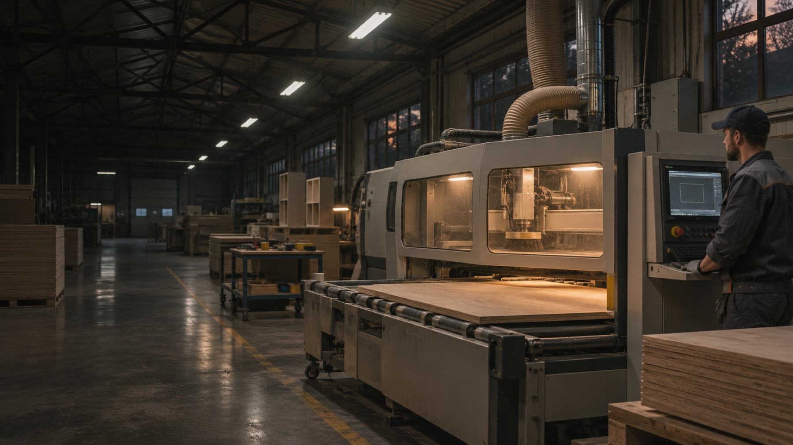
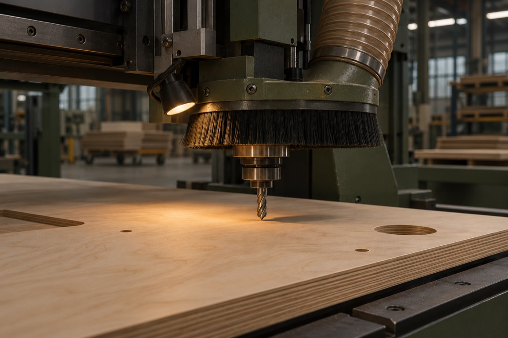
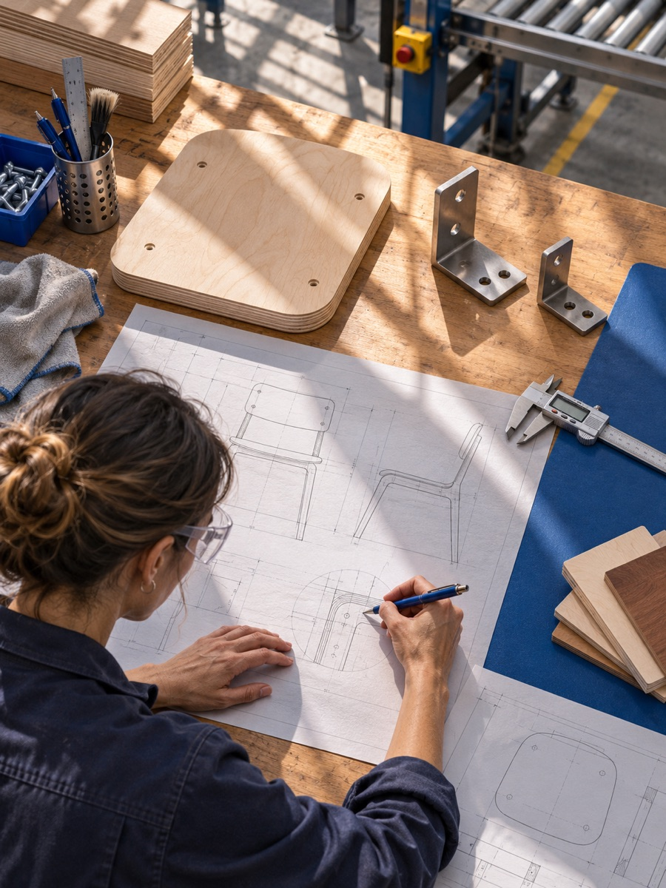
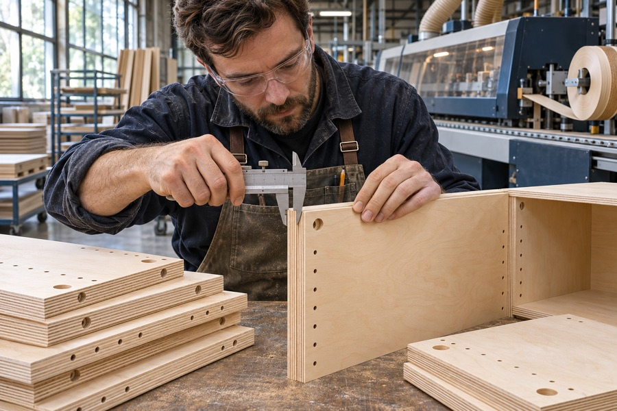
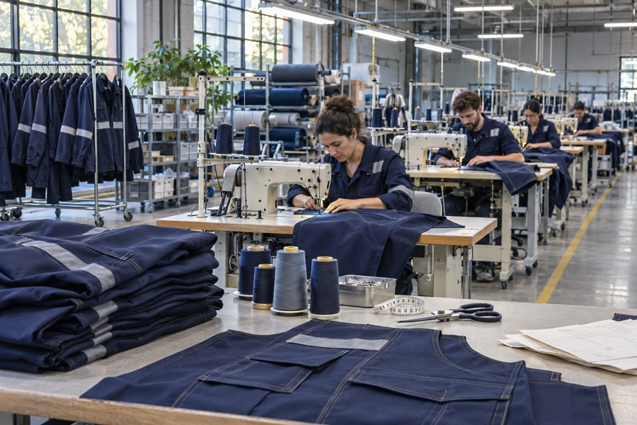
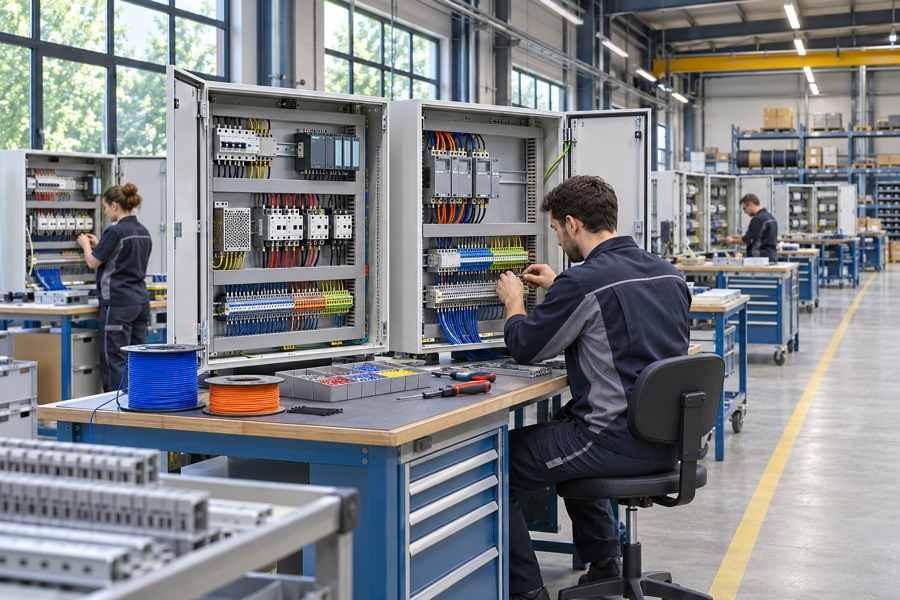

Технологические карты
Материалы, нормы расхода, оборудование и операции. Цех получает актуальную версию карты вместе с заданием.

Автоматизация производства
Свяжем технологов, склад и цех. В каждом заказе будет видно, что уже сделано, где возникла задержка и успевает ли производство к сроку.
Маршрут заказа
Проведите партию мебельных корпусов по пяти этапам. На каждом видно, какие данные получает следующий участок.

Мастер видит, сколько корпусов нужно выпустить, к какому сроку и по какой версии чертежа.
Технолог задаёт размеры деталей, порядок операций, нормы расхода и параметры обработки.
Склад резервирует ЛДСП, кромку и фурнитуру по спецификации. Мастер заранее видит, каких материалов не хватает.
Участки получают задания на раскрой, кромление, сверление и сборку. По завершении отмечают выпуск и расход.
Контролёр проверяет комплектность и геометрию корпусов. Готовые изделия и детали на доработку учитываются в заказе.
Свяжем работу технолога, склада, мастера и отдела качества данными по каждому заказу.
Материалы, нормы расхода, оборудование и операции. Цех получает актуальную версию карты вместе с заданием.
Распределяйте заказы по участкам и сменам с учётом сроков, загрузки и готовности материалов.
Рассчитывайте потребность по спецификациям, резервируйте остатки и фиксируйте фактический расход.
Выдавайте задания по операциям. Мастера видят очередь работ и отмечают выпуск, простой и причины задержек.
Назначайте контрольные операции, фиксируйте дефекты и отслеживайте, куда вернули партию на доработку.
Сравнивайте план с фактом по срокам, выпуску, расходу и трудозатратам. Разбирайте отклонения по заказам.

Выберите производство, чтобы посмотреть, из каких операций складывается технологическая карта.

ЛДСП · кромка · фурнитура

Ткань · подкладка · молнии

Корпус · клеммы · проводка
Внедрение
Начинаем с одного потока заказов и расширяем систему после проверки в цехе.
Проходим путь заказа вместе с технологом и мастером, изучаем документы и находим места, где теряются данные или время.
Выбираем изделие или участок, переносим технологическую карту, настраиваем задания и учёт материалов.
Проверяем работу на реальных заказах, обучаем команду и подключаем остальные участки и нужные интеграции.
Опишите, что вы выпускаете и какой процесс хотите автоматизировать первым. Из ответов соберём короткий бриф для обсуждения.